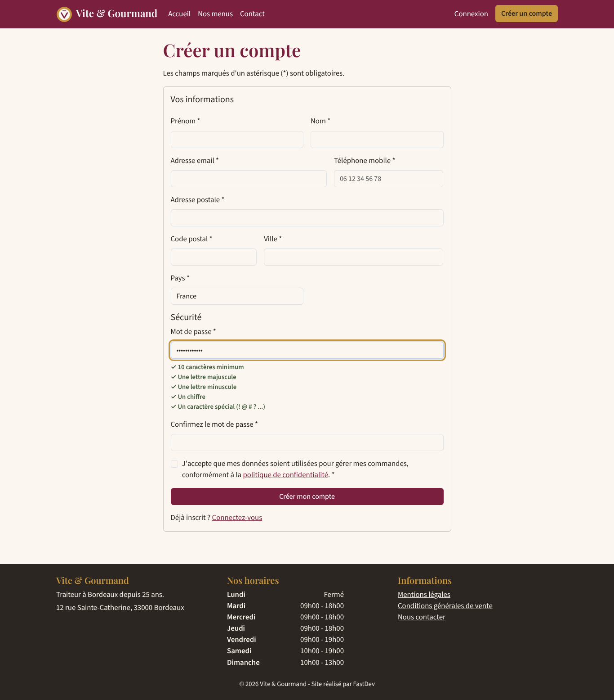
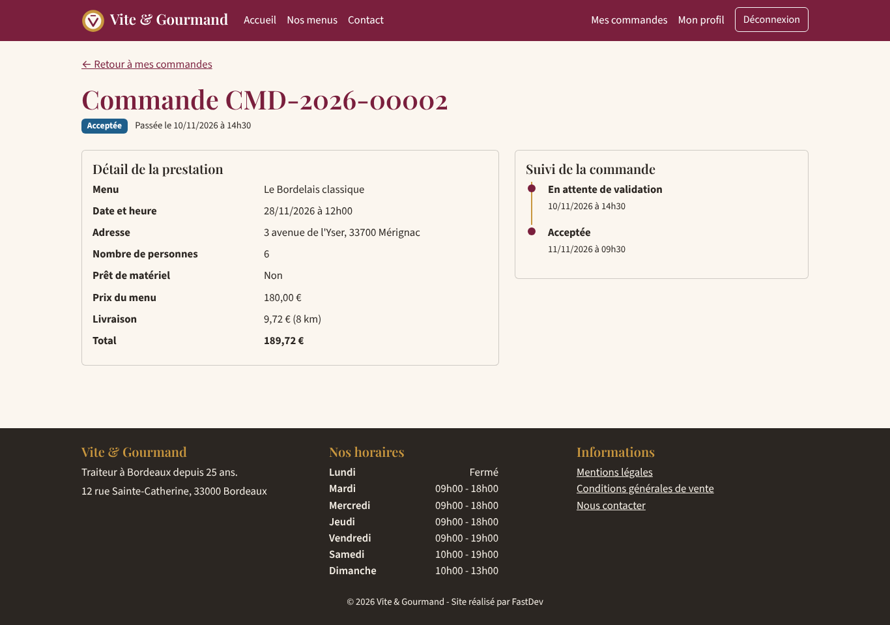
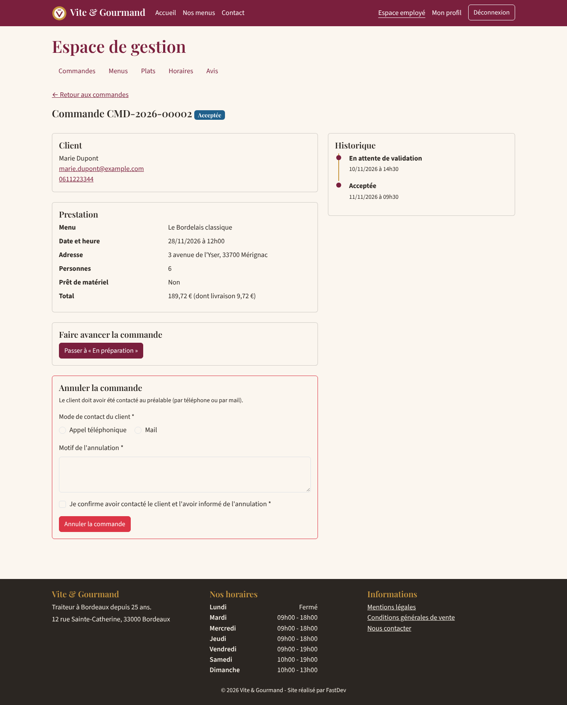
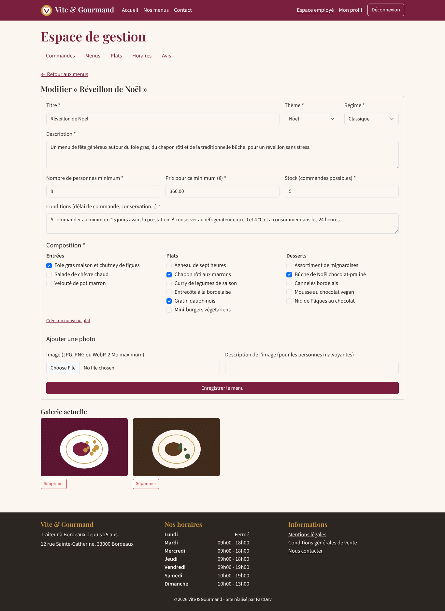
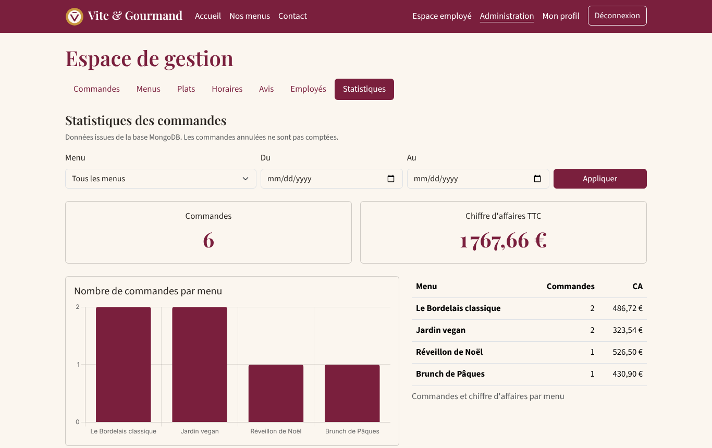

Vite & Gourmand
Manuel d'utilisation
Application web de commande de menus traiteur
Adresse de l'application : https://viteetgourmandvalentinfigueiredo.alwaysdata.net
1. Présentation de l'application
Vite & Gourmand permet aux clients de consulter les menus du traiteur, de les commander en ligne et de suivre leur commande.
L'équipe gère les commandes, les menus et les avis depuis un espace dédié, et l'administrateur suit l'activité grâce à des statistiques.
| Profil | Ce qu'il peut faire |
|---|
| Visiteur | Consulter l'accueil, les menus et leur détail, contacter l'entreprise, créer un compte. |
| Utilisateur (client) | Commander, suivre, modifier ou annuler ses commandes, donner un avis, gérer son profil. |
| Employé | Gérer les commandes et leurs statuts, les menus, les plats et les horaires, et modérer les avis. |
| Administrateur | Tout ce que fait l'employé, plus la gestion des comptes employés et les statistiques. |
2. Identifiants de test
| Profil | Email (identifiant) | Mot de passe |
|---|
| Administrateur | jose@vite-gourmand.fr | Admin@Vite2026! |
| Employée | julie@vite-gourmand.fr | Employe@Vite2026! |
| Utilisateur | marie.dupont@example.com | Client@Vite2026! |
| Utilisateur | thomas.martin@example.com | Client@Vite2026! |
| Employé désactivé | ancien.employe@vite-gourmand.fr | Employe@Vite2026! (connexion refusée) |
Le jeu de démonstration contient une commande à chaque étape importante : en attente (Marie), acceptée (Marie),
en attente de retour de matériel (Thomas), terminées avec avis, et une commande annulée.
3. Parcours visiteur
Consulter et filtrer les menus
- Cliquez sur Nos menus dans le menu principal.
- Utilisez les filtres à gauche : fourchette de prix, thème, régime, nombre de convives. La liste se met à jour automatiquement, sans rechargement.
- Cliquez sur Voir le détail pour afficher la composition, les allergènes et les conditions du menu (encadré jaune).

Créer un compte
- Cliquez sur Créer un compte en haut à droite.
- Renseignez nom, prénom, téléphone, email, adresse et mot de passe. Les règles du mot de passe se cochent au fur et à mesure de la saisie.
- Acceptez la politique de confidentialité, puis validez : vous êtes connecté et recevez un email de bienvenue.

Mot de passe oublié
Sur la page de connexion, cliquez sur Mot de passe oublié ? et saisissez votre email. Vous recevez un lien valable 1 heure pour choisir un nouveau mot de passe.
Contacter l'entreprise
Menu Contact : indiquez un titre, une description et votre email. La demande est transmise par email à l'entreprise, qui vous répond directement.
Suivre, modifier ou annuler une commande
- Menu Mes commandes, puis Détail.
- Tant que la commande est en attente de validation, les boutons Modifier la commande (tout sauf le menu) et Annuler la commande sont disponibles.
- Une fois la commande acceptée, le suivi affiche chaque étape avec la date et l'heure.
Testez avec Marie : commande CMD-2026-00003 (en attente) et CMD-2026-00002 (acceptée).

Donner un avis
Quand la commande est terminée, vous recevez un email. Dans le détail de la commande, choisissez une note de 1 à 5 et rédigez un commentaire. L'avis est publié sur l'accueil après validation par l'équipe.
Mon profil
Menu Mon profil : modifiez vos informations personnelles ou votre mot de passe.
5. Parcours employé
Connectez-vous avec le compte de Julie : vous arrivez sur l'Espace de gestion.
Gérer les commandes
- Filtrez les commandes par statut ou par client (nom, prénom ou email).
- Cliquez sur Gérer, puis sur le bouton de l'étape suivante : Acceptée → En préparation → En cours de livraison → Livrée → Terminée (ou « En attente du retour de matériel » si du matériel a été prêté).
- Le client est prévenu par email au passage « en attente du retour de matériel » (frais de 600 € sans restitution sous 10 jours ouvrés) et au passage « terminée » (invitation à donner son avis).
- Pour annuler : contactez d'abord le client, puis indiquez le mode de contact (téléphone ou mail) et le motif, et cochez la confirmation.

Gérer les menus, plats et horaires
- Menus : ajoutez ou modifiez un menu (titre, description, thème, régime, minimum de personnes, prix, conditions, stock, plats) et ses photos, avec leur description pour les personnes malvoyantes. Un menu déjà commandé n'est pas supprimé mais archivé.
- Plats : créez un plat (entrée, plat, dessert) et cochez ses allergènes. Un même plat peut figurer dans plusieurs menus.
- Horaires : modifiez les horaires affichés dans le pied de page, ou cochez « Fermé ».

Modérer les avis
Menu Avis : les avis en attente apparaissent en premier. Valider les publie sur l'accueil, Refuser les masque.
6. Parcours administrateur
Connectez-vous avec le compte de José. L'administrateur dispose de tout l'espace employé, ainsi que :
Gérer les employés
- Menu Employés : renseignez prénom, nom, email et mot de passe du nouvel employé.
- L'employé reçoit un email l'informant de la création de son compte. Le mot de passe n'y figure pas : communiquez-le lui de vive voix.
- En cas de départ, cliquez sur Désactiver : l'employé ne peut plus se connecter, et sa session en cours est fermée.
Pour des raisons de sécurité, aucun compte administrateur ne peut être créé depuis l'application.
Statistiques et chiffre d'affaires
Menu Statistiques : graphique du nombre de commandes par menu et tableau du chiffre d'affaires, filtrables par menu et par période. Les commandes annulées ne sont pas comptées.
